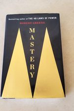

Library › Power & Strategy
Mastery — Summary & Key Lessons

The path from apprentice to master — decoded from history's greatest minds and modern masters alike.
📖 OPEN THE FULL INTERACTIVE BREAKDOWN →🌐 Read it in Hindi, Hinglish, Gujarati, Tamil & 22 more languages — free, with audio.
💡 The Big Idea
Greene dissects history's masters (da Vinci, Darwin, Faraday, Coltrane) and nine living ones, and finds one architecture beneath every 'genius': (1) THE LIFE'S TASK — an inner inclination visible in childhood obsessions; careers aligned with it compound energy, careers against it leak it (the false paths: money, parental approval, prestige). (2) THE APPRENTICESHIP — 5-10 years of deep observation, skill acquisition, and experimentation, optimizing for LEARNING over money/title (choose the harder placement with the better teachers); its engine is deliberate practice through the boredom barrier. (3) THE MENTOR — absorb a master's decades in years via close interaction; then, crucially, SURPASS and separate. (4) SOCIAL INTELLIGENCE — the naive fall to politics ('my work will speak for itself' — it won't); masters read the human board as part of the craft. (5) THE CREATIVE-ACTIVE — widen back up: cross-pollinate fields, court serendipity, hold the tension of negative capability. (6) FUSION — after enough internalized dimensions, thinking becomes FEELING: the master's intuition perceives the whole board at once. The democratic punchline: the brain that built da Vinci is the brain you own; what's rare isn't the hardware — it's submitting to the path.
🧠 The 4 Key Lessons
Lesson 1: The Life's Task: Your Childhood Left You a Map
Chapter 1: Discover Your Calling
Before economics and expectations buried it, you had primal inclinations — the subjects that made time vanish at age 8: patterns, machines, words, animals, performing, building. Greene's claim: that early voice marks your LIFE'S TASK — the work your particular wiring compounds fastest at — and reconnecting with it isn't nostalgia, it's strategy: alignment multiplies the deep energy that mastery's long road requires (misaligned strivers manage discipline; aligned ones ride obsession). The three false paths that bury it: choosing for MONEY (the returns can't fund the motivation deficit), for PARENTS/prestige (living someone's unlived life), or for EASE (the path of least resistance leads to most regret). Course-correction is always available: treat your career as a series of positions that each move you closer to the task's neighborhood — sideways moves that align beat promotions that estrange. The test for candidates: which work would you do apologetically for free, and which failure would you rather explain at 80?
📖 Example: Leonardo, the book's north star: the illegitimate child wandering Vinci's countryside, stealing paper (a luxury then) to sketch lizards and machines — inclinations fully visible at 10. Every apparent detour (military engineering, anatomy, court pageants) fed… Read the full example →
⚡ Do this: Write your inclination inventory: the 3 activities that devoured time at ages 6-12, and the 3 current activities where hours vanish. Find the overlap's theme. Then rate your current work 1-10 on alignment — and name one position-change (not job-quit) that would move it +2.
Lesson 2: The Apprenticeship: Optimize for Learning, Not Looking Good
Chapter 2: Submit to Reality
Every master served 5-10 years of unglamorous transformation — Greene's Ideal Apprenticeship has three overlapping modes. DEEP OBSERVATION: first, shut up and absorb — the field's rules, power dynamics, unwritten codes (the apprentice who arrives 'disrupting' learns nothing and gets quietly excluded). SKILL ACQUISITION: identify the field's core skill and cycle it through deliberate practice — past the initial fun, THROUGH the boredom barrier (the 6-month wall where most quit to 'explore other interests'), into the automaticity that frees the mind for higher layers; 10,000 hours is less a number than a description of what surviving boredom looks like. EXPERIMENTATION: gradually test your own variations, seek feedback, expand the circle. The strategic rule ruling all placements: ALWAYS CHOOSE LEARNING OVER MONEY — the prestigious well-paid role that teaches nothing is a gilded detour; the modest room with masters in it is the actual fast track (money not taken is tuition paid). And embrace tedium consciously: resistance to boredom, not talent, is the apprenticeship's real entrance exam.
📖 Example: Charles Darwin, Exhibit A: offered the Beagle voyage — five years, unpaid, seasick, his father calling it a waste of a medical education — he chose the floating apprenticeship over every respectable path. Aboard: deep observation (thousands of specimens,… Read the full example →
⚡ Do this: Audit your current position with one question: 'What did I LEARN this month that compounds?' If the honest answer is 'nothing — but it pays well,' start engineering the learning-optimized move: identify where your field's masters cluster, and what visible skill-proof would get you into that room within 12 months.
Lesson 3: Mentors and the Social Board: Absorb, Surpass, Navigate
Chapters 3-4: Mentor Dynamics, Social Intelligence
MENTORS are time-compression machines: a master's feedback loop transfers decades of trial-and-error in years (Faraday under Davy: from bookbinder's apprentice to history's greatest experimentalist). Getting one: don't ask strangers for 'mentorship' — make yourself USEFUL to someone whose work you'd steal (Faraday bound Davy's lectures into a book as his application); the relationship is earned through demonstrated devotion, not requested. Using one: absorb their METHOD, not just their answers — and watch the endgame: every apprentice must eventually SURPASS and separate, ideally gracefully (Davy turned on Faraday when the student's star rose — plan for the shadow side). SOCIAL INTELLIGENCE is the parallel curriculum the naive skip: believing 'the work speaks for itself,' they're blindsided by envy, politics, and the seven deadly workplace realities (envy, conformism, rigidity, self-obsessiveness, laziness, flightiness, passive aggression — Greene's field guide to colleagues). Masters treat the human environment as part of the craft: managing perceptions, defusing envy preemptively (strategic modesty about your rise), and reading intentions behind words — not as cynicism, but because every great work must SURVIVE the people around it to exist.
📖 Example: Faraday-Davy, the complete arc in one relationship: Faraday's bound-lecture gift wins the apprenticeship; years of humble service (including valet duties on tour — swallowed pride as tuition) buy total access to Davy's method; then Faraday's discoveries… Read the full example →
⚡ Do this: Identify the one person whose method you most want to absorb. This month, make yourself concretely useful to them once — solve a small real problem of theirs, no ask attached. Meanwhile, map your workplace board: who quietly resents whose rise? What does that teach about how to carry YOUR next win?
Lesson 4: The Creative-Active and Fusion: Widen, Then Feel the Whole Board
Chapters 5-6: Awaken the Dimensional Mind, Fuse
After depth comes deliberate WIDTH. The Creative-Active phase: keep the apprentice's discipline but reopen the child's mind — hold NEGATIVE CAPABILITY (Keats: dwelling in uncertainty without irritably grasping at premature answers); court SERENDIPITY (masters keep wide inputs and notebooks because breakthroughs arrive disguised as irrelevancies — Darwin reading economist Malthus for pleasure and finding evolution's mechanism); think in ANALOGIES across fields; and alternate intense focus with genuine release (the shower/walk/dream state where incubated connections surface — the mechanical bird dream that gave Mozart... rather, the pattern of solutions arriving off-duty, documented from Poincaré to Coltrane). Sustained long enough, the dimensions FUSE: Greene's endpoint, where analysis becomes intuition — the master perceives situations whole (Bobby Fischer seeing 'force fields' not pieces; Coltrane speaking through changes he no longer computes; the veteran firefighter who orders everyone out seconds before the floor collapses, unable to say why until later). Not mysticism — compressed pattern libraries so internalized they return answers as FEELINGS. Twenty thousand hours of structure, cashing out as what looks exactly like magic.
📖 Example: John Coltrane, the full pipeline in one man: obsessive apprenticeship (practicing until his reeds bled red, 12-hour days transcribing every school of saxophone), the widening (studying Indian ragas, African rhythms, Einstein's physics, harp technique —… Read the full example →
⚡ Do this: Institutionalize width on top of your depth: (1) subscribe to two serious sources from alien fields and read weekly, (2) keep an analogy notebook — force one 'X in my field is like Y in theirs' entry per week, (3) after any stuck deep-work session, take the no-input walk and carry a capture tool: the answer tends to arrive off the clock.
✅ 5-Step Action Plan
- Excavate your life's task from childhood obsessions; move one position closer this year.
- Choose learning over money at every placement decision — boredom survived is the real credential.
- Earn a mentor with usefulness, absorb their method, and plan the graceful surpassing.
- Study the social board as part of the craft: envy managed early never becomes sabotage later.
- After depth, buy width: alien inputs, analogy practice, and off-duty incubation walks.
💬 Best Quotes from Mastery
- “The time that leads to mastery is dependent on the intensity of our focus.”
- “Become who you are by learning who you are.”
- “The future belongs to those who learn more skills and combine them in creative ways.”
Interactive version: mark lessons as read, listen in your language, share quote cards.